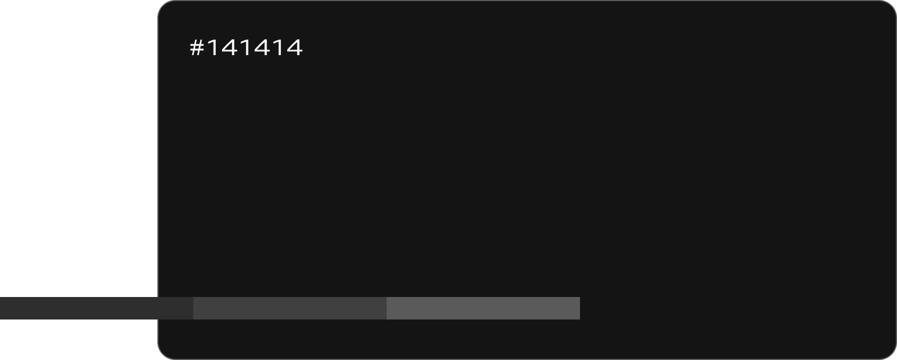
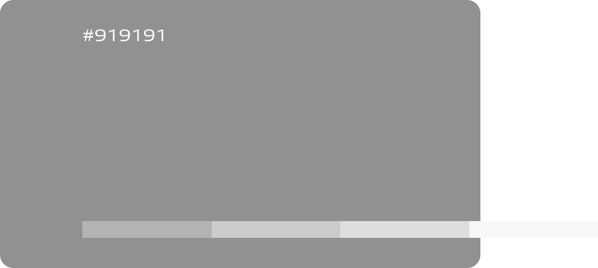

Home
Home
專案介紹
風暴國際以模特兒經紀公司起家，其後二十年來跨足影視媒體、運動、生活風格等各個領域，至今隨著現代價值觀及網路媒體的轉變，重新定位為全方位娛樂經紀公司。
設計目標
以延伸品牌調性為出發點做改版，設計上以線框、線條錯綜交疊在各個區域，象徵 Storm Model 的「創新思想、突破框架」的理念，並沿用舊網站風格加以優化，為企業形象網站打造新的視覺體驗。
FONT捨棄舊版古典襯線體，改版後選擇具有現代感的 Allumi Std 作為標準字，而中文內容則使用思源黑體，讓文章易於閱讀。
Allumi Std
Extended
Aa Bb Cc Dd Ee Ff Gg Hh Ii Jj Kk Ll Mm Nn Oo Pp Qq Rr Ss Tt Uu Vv Ww Xx Yy Zz 1 2 3 4 5 6 7 8 9 0
Extended
Aa Bb Cc Dd Ee Ff Gg Hh Ii Jj Kk Ll Mm Nn Oo Pp Qq Rr Ss Tt Uu Vv Ww Xx Yy Zz 1 2 3 4 5 6 7 8 9 0
Extended Bold
Aa Bb Cc Dd Ee Ff Gg Hh Ii Jj Kk Ll Mm Nn Oo Pp Qq Rr Ss Tt Uu Vv Ww Xx Yy Zz 1 2 3 4 5 6 7 8 9 0
思源黑體 Noto Sans TC
Regular
Aa Bb Cc Dd Ee Ff Gg Hh Ii Jj Kk Ll Mm Nn Oo Pp Qq Rr Ss Tt Uu Vv Ww Xx Yy Zz 1 2 3 4 5 6 7 8 9 0
Medium
Aa Bb Cc Dd Ee Ff Gg Hh Ii Jj Kk Ll Mm Nn Oo Pp Qq Rr Ss Tt Uu Vv Ww Xx Yy Zz 1 2 3 4 5 6 7 8 9 0
Bold
Aa Bb Cc Dd Ee Ff Gg Hh Ii Jj Kk Ll Mm Nn Oo Pp Qq Rr Ss Tt Uu Vv Ww Xx Yy Zz 1 2 3 4 5 6 7 8 9 0
COLOR
為了跳脫以往時尚配色框架，加深品牌識別又能融入年輕族群，在黑色調製上選擇帶有灰色調的深色系，呼應主視覺的同時亦可降低視覺上的疲勞感。
 
GRID LAYOUT
BEFORE & AFTER
改版優化上為官網重新編制排列組合，讓整潔的內容條理清晰增加易讀性，也因為首頁內容簡潔，在設計上選擇加入微動態強化使用者對於品牌的印象，同時與舊版網站劃分出差異性。
LANDING PAGE
明確劃分出兩大服務項目 Model 與 Studio，讓用使用者能直覺了解業務內容，減少認知時間。
Mobile Mobile Mobile Mobile Mobile Mobile Mobile Mobile Mobile Mobile Mobile Mobile Mobile Mobile Mobile Mobile
Mobile Mobile Mobile Mobile Mobile Mobile Mobile Mobile Mobile Mobile Mobile Mobile Mobile Mobile Mobile Mobile
MODEL
體現 Storm Model 「跳脫框架、突破自我」的企業理念，在設計 Model 區塊時以線條呈現舊式框架的意象，再以輪播字體和照片交錯其中，跳脫以往制式排版，也能引發使用者注意力。